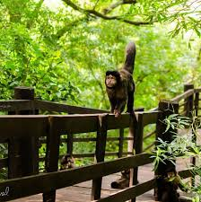

<ion-header [translucent]="true">
  <ion-toolbar>
    <ion-title>
      Pontos Turísticos
    </ion-title>
  </ion-toolbar>
</ion-header>

<ion-content [fullscreen]="true" class="body">
  <ion-card>
    <ion-card-content>
      <ion-list>
        <ion-item>
          <ion-thumbnail slot="start">
            
          </ion-thumbnail>
          <ion-label>Parque Ecológico Municipal</ion-label>
          <ion-button onclick="window.open('https:/maps.app.goo.gl/fRsW8DY4MyaPQDH89')">
            <ion-icon name="location"></ion-icon>
          </ion-button> 
        </ion-item>
  
        <ion-item>
          <ion-thumbnail slot="start">
            
          </ion-thumbnail>
          <ion-label>Parque Olavo Ferreira de Sá</ion-label>
          <ion-button onclick="window.open('https:/maps.app.goo.gl/awBbGaGYkR4fduC27')">
            <ion-icon name="location"></ion-icon>
          </ion-button>
        </ion-item>
  
        <ion-item>
          <ion-thumbnail slot="start">
            
          </ion-thumbnail>
          <ion-label>Museu Histórico Municipal</ion-label>
          <ion-button onclick="window.open('https:/maps.app.goo.gl/oZRR6QMAVRyGmtNr7')">
            <ion-icon name="location"></ion-icon>
          </ion-button>
        </ion-item>
  
        <ion-item lines="none">
          <ion-thumbnail slot="start">
            
          </ion-thumbnail>
          <ion-label>Catedral Paróquia do Senhor Bom Jesus</ion-label>
          <ion-button onclick="window.open('https:/maps.app.goo.gl/8xeWgBVZ9sHEGb9Q6')">
            <ion-icon name="location"></ion-icon>
          </ion-button>
        </ion-item>
      </ion-list>
    </ion-card-content>
  </ion-card>
</ion-content>
